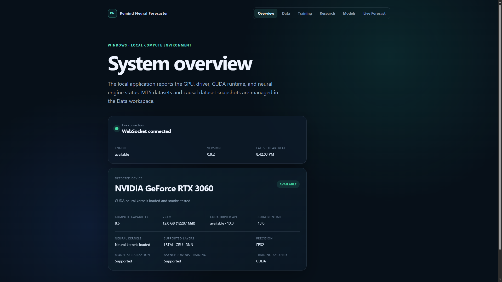

Srozumitelné názvy
Snapshoty a experimenty mají upravitelné display names. Interní ID, hashe a vazby zůstávají stabilní a dohledatelné.
Reprodukovatelná cesta od uzavřených MT5 barů přes kauzální datasety a CUDA trénink až po out-of-sample evaluaci a živou inferenci — v jednom lokálním Windows procesu.

Čitelné názvy, neměnné identity, dohledatelné vazby a bezpečný lifecycle datasetů, experimentů i modelů.
Snapshoty a experimenty mají upravitelné display names. Interní ID, hashe a vazby zůstávají stabilní a dohledatelné.
Verzované feature/target datasety, train-only normalizace, chronologický split a explicitní diagnostika mezer bez interpolace.
CUDA BPTT, AdamW, clipping, dropout, validation a jednorázová out-of-sample evaluace nejlepšího checkpointu.
Mazání s náhledem závislostí, interním košem, obnovením a výslovně potvrzeným permanentním odstraněním.
Nejlepší checkpoint lze registrovat jako kandidáta. Aktivace je explicitní, validovaná a transakční — nikdy automatická.
Nový potvrzený uzavřený bar může asynchronně vytvořit multi-horizon High/Low forecast pro web a MT5 overlay.
Snímky pocházejí z Release sestavy nad izolovanými syntetickými demonstračními daty. Kliknutím je zvětšíte.
Verze 0.8.2 pokrývá lokální datový tok, snapshoty, experimenty, OOS evaluaci, registr modelů, živou inferenci a vizualizaci forecastu v MT5. Model se nikdy neaktivuje automaticky a aplikace nevytváří obchodní příkazy.